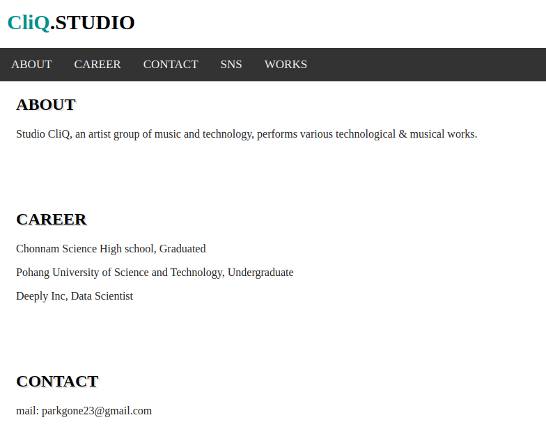
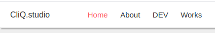
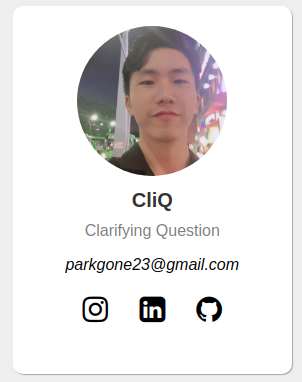
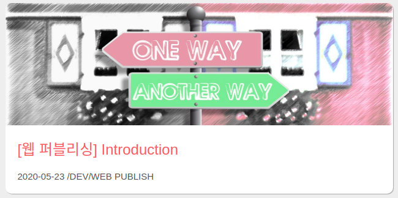
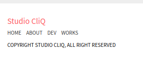

2020-06-06 /DEV/WEB PUBLISH
레이아웃을 고려한 홈페이지 만들기
레이아웃, 생각보다 중요했어
앞서 Introduction에서는 개발 블로그를 만들고자 하는 개인적인 동기에 대해 이야기했다. 이번 포스팅에서는 개발 블로그의 첫 페이지를 작성하기까지 레이아웃(화면 구성) 및 본격적인 코딩과 관련한 이야기를 하려고 한다. 일단 필자는 레이아웃에 대한 기본 개념조차 없었기 때문에 w3school의 웹페이지 레이아웃 관련 문서를 읽어봤다.
CSS Website Layout (왜 '레이아웃'을 검색했는지는 여전히 의문..)
레이아웃이 뭔데?
일반적으로 디자인 분야에서 레이아웃 디자인, 혹은 페이지 레이아웃 디자인이란 컴퓨터 디자인 혹은 소프트웨어를 디자인 할 때, 각 구성요소를 효과적으로 배열하는 일을 말한다. 디자인에 대한 지식이 거의 전무한 필자는, 사용자가 웹 사이트를 효율적으로 탐색할 수 있도록 텍스트, 미디어, 탐색창 등 다양한 구성 요소들을 예쁘고 효과적으로 배치하는 작업으로 이해하고 있다. 위의 w3school의 레이아웃 설명 페이지에 따르면, 웹사이트를 구성하는 레이아웃 요소는 보편적으로 헤더, 메뉴, 콘텐츠, 푸터로 되며 각 요소의 역할은 다음과 같다.
- 헤더: 웹사이트 상단에 위치하여 사이트 이름이나 로고가 위치하는 곳
- 메뉴(네비게이션 바): 사용자가 웹사이트를 쉽게 탐색할 수 있도록 안내
- 콘텐츠: 페이지에서 가장 넓고 중요한 부분, 몇 개의 column으로 이루어짐
- 푸터: 페이지의 하단에 위치하여 저작권 정보나 연락처를 기재하는 곳
이래서 레이아웃, 레이아웃 하는구나
'당연한 내용들 아니야?' 라고 생각할 수 있지만, 필자는 위의 디자인에서 레이아웃이 상당한 도움이 되었다. 또한, CSS 스타일이나 웹 페이지의 내용을 수정할 경우가 많은데, 정해진 용어로 레이아웃을 나눠두면 유지보수하기에 상당히 편리하다. 이와 관련하여 구글, 네이버의 class, id 네이밍 가이드를 훑어보는 것도 도움이 되었다.
레이아웃을 반영하기 전과 후를 비교한다면, 작업 속도도 줄어들고 CSS 스타일 적용도 편리해지며, 각 요소안에 들어가는 내용을 구상하는데 있어서도 편해진다. 실제로 다른 웹페이지를 크롬 개발자 도구(F12)를 이용하여 탐색하다보면 레이아웃 요소를 담고 있는 클래스명이나 아이디를 쉽게 확인할 수 있다.
모방은 창작의 어머니라고 했던가, 개인적으로 자주보는 개발 블로그의 레이아웃을 참고했다. 다음 블로그는 내가 개발블로그를 만드는데 참고한 프론트엔드 개발자이신 에반님의 블로그이다. (블로그 형태를 참고할 수 있도록 허락해주신 에반님 감사합니다!) 글의 분량이나 어체, 내용 등 모든 면에서 좋은 글이 많다. Evan's Tech Blog
아이고 못난 내 자식
레이아웃에 대해 본격적으로 이야기하기 앞서, 내가 처음 만든 웹사이트 홈페이지를 보고 넘어가자. 고슴도치도 제 새끼는 이뻐한다지만, 아무리 내 새끼라도 못나긴 정말 못났다. (문단 제목에 그림자 넣었을 때 뿌듯해 했었다니..) 위 페이지를 만들었을 때는 어떠한 세부적인 내용도 고민하지 않고 만들었기 때문에, 생각나는 아무 내용이나 집어 넣었다.
레이아웃은 코드를 짜는데도 도움을 주지만, 각 영역마다 어느정도 정해진 목적이 있기 때문에, 레이아웃을 고려하며 페이지를 기획한다면 페이지 내용 정리에도 도움이 된다. 어떤 내용을 넣어야할지 잘 모르겠다면, 다른 기술 블로그를 참고하여 홈페이지를 만들어보도록 하자.
레이아웃을 계획하여 홈페이지 만들기
레퍼런스 페이지를 참고하여, 상단의 헤더와 네비게이션바는 묶어서 하나로 구현했다. 홈페이지의 메인 콘텐츠는 프로필(사진, SNS, 이메일) 및 최근에 업로드 된 포스트와 내가 추천하는 포스트, 그리고 하단의 푸터를 삽입하기로 결정했다. 추가적으로 가끔 작업하는 음악 작업물을 업로드하는 공간도 고려하기로 했다.
헤더 및 네비게이션 바

헤더는 로고가 들어가는 타이틀과 글로벌 네비게이션바로 이루어져 있다. 네비게이션 바는 홈페이지, 포트폴리오, 개발 포스팅, 개인 음악 작업 포스팅 페이지로 이동할 수 있게 링크를 걸어놨다. 이를 CSS를 통해 모든 내용이 줄바꿈 없이 표현될 수 있도록 수정하였고, 마우스 커서에 반응하여 색이 변하도록 했다. 마우스의 위치에 따라 색, 모양 등 CSS를 바꾸는 것은 CSS의 hover 기능, 혹은 Javascript를 통해 구현 가능하다. 필자는 hover가 훨씬 간편하다고 느꼈기 때문에 hover 기능을 통해 구현하였다.
메인 컨테이너
메인 콘텐츠는 3개의 column으로 구분하여 좌측에는 프로필, 중앙에는 최근 포스트와 추천 포스트, 우측에는 내 개인 작업물을 표시하는 공간으로 분리하였다. 나중에 포스트가 추가된다면 각 프로젝트 별로 포스트 수, 일간 사용자 등 각종 현황을 볼 수 있는 대시보드나 사이드 네비게이션바도 추가할 예정이다.
메인 컨테이너의 column 레이아웃은 CSS의 float 속성을 통해 쉽게 구현가능하다. 기본적으로 HTML은 상단에서 하단으로 html 요소들을 표시하며, 수평 형태의 레이아웃을 구현하기 위해서는 여러 CSS 속성을 사용해야한다. 이중 대표적으로 float은 한 컨테이너 내에서 쉽게 수평 방향 배열을 가능하게 하는 기능을 제공한다. 필자는 다음 링크를 참고하여 3 column 레이아웃을 만들었다.
Web Club :: 플로팅(float) 레이아웃과 clear 속성
프로필

먼저 가장 좌측 column의 프로필에는 내 사진 및 예명, SNS 프로필을 넣었다. SNS 아이콘은 font awesome에서 제공하는 아이콘을 이용했다. font awesome 외에 구글에서 제공하는 Material Icons등 무료로 편하게 사용할 수 있는 아이콘이 많다. 이러한 아이콘들은 주로 html의 link 태그를 이용하여 스타일 시트를 가져오고, 미리 정의된 class 이용하여 아이콘을 표시하는 방식이다. 각 사이트 마다 예시 코드가 있으니 이를 가져와서 사용하는 곳에 맞게 크기, 색상등을 수정하면 편하게 이용할 수 있다.
메인 콘텐츠
가운데 column은 메인 콘텐츠를 표시하는 영역으로 나는 일단 최근 포스트들을 표시하도록 했다. 일단은 최근 5개의 포스트를 Recent Post로 노출할 계획이다. 나중에 게시물들이 쌓인다면, 그나마 자랑할 수 있을만한 포스트나 완료된 프로젝트를 노출하려하려한다. (지금의 내겐 너무 먼 미래..)
각 포스트는 제목과 최초 작성 일자, 대표이미지를 표시하도록 했다. 대표 이미지는 주로 인터넷에서 상업적으로 이용 가능한 무료 이미지(royalty free)를 가져왔다. Shutterstock, drible 등 여러 사이트가 있지만 적절한 무료이미지를 가장 찾기 쉬웠던건 pixabay라는 사이트이다. 개인적으로 퀄리티는 조금 떨어진다고 생각하나, 상업적으로 이용할 수 있는 무료 이미지가 많다. 업로드 되는 포스트 이미지도 모두 카드뷰로 구현하였으며, 각각의 카드에 대해 CSS hover 속성을 통해 마우스 커서를 옮겼을 때, 카드가 팝업되는 것처럼 애니메이션을 구현하였다. (만들고 나서 제일 뿌듯..)
우측 카드 섹션(깍두기)
레이아웃을 결정할 때 가장 고민했던게 이 부분을 뺄까 말까에 대한 것이었다. 3 column은 노트북이나 데스크탑을 보는 사람에게만 적합한 형식이라, 모바일이나 테블릿 사용자에게는 적합히지 않고 이부분에 어떤 내용을 넣을까도 고민이었다. 다만 개발 블로그다 보니, 아무래도 테블릿 사용자보다는 노트북, 데스크탑 사용자가 훨씬 많을 것 같았고, 추후 다양한 플러그인을 직접 구현해서 이 부분에 노출시키면 재미있을 것 같았다. 일단은 예전에 녹음까지 했던 개인 작업물들을 올려놓았지만, 아마 곧 다른 프로젝트를 개시하는 공간으로 바꾸지 않을까 싶다.
푸터

푸터는 웹사이트 하단에 위치하여 사이트맵, 맨 위로 올라가기 버튼, 연락처, 저작권 사항을 표시하는 곳이다. HTML 태그중 footer 태그를 통해 구현할 수 있다. 작성일 기준 현재는 글로벌 네비게이션 바와 같은 사이트맵, 간단한 저작권 정보만 기재해놓았다. 맨 위로 올라가는 버튼 등 Javascript를 이용하는 작업은 추후 진행하려한다.
마치며
이상으로 내 첫 웹사이트의 첫 랜딩페이지를 만든 과정에 대해 설명했다. 포스팅 페이지는 랜딩 페이지와 많은 부분이 겹치므로 레이아웃에 대한 설명은 넘어가려한다. 처음 페이지를 만들 때만해도 막막하고 답답했지만, 어느정도 모양은 잡혀가는 것을 보니 뿌듯하기도 하고 괜히 이뻐보이기도 한다. 다음 포스팅은 만든 HTML, CSS 페이지를 웹에 개시하는 방법에 대해 이야기하려한다.